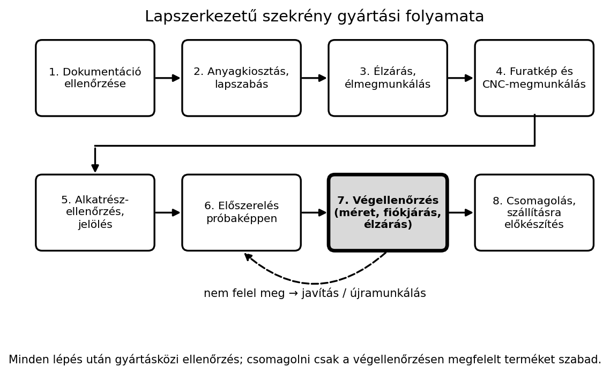

Műhelyhelyzet: a megrendelő két fiókos, laminált lapból készülő előszobaszekrényt kért. A rajz, a szabásjegyzék és a szabástérkép már elkészült, az anyag megérkezett a műhelybe. A tanuló feladata az, hogy a lapokból méretpontos alkatrészeket gyártson, az alkatrészekből pedig összeszerelhető, pontosan járó fiókos korpuszt készítsen elő.
Ha a folyamat elején hibázol – például rossz a szabásjegyzék vagy elcsúszik a furatkép –, a hiba a korpusz összeállításánál, a fiókok járásánál és a vevőnél csak később jelentkezik. Ezért ezt a fejezetet úgy építjük fel, mint egy gyártási átvezetést: a dokumentációtól a csomagolásig végigmegyünk a valós műveleti sorrenden.
A bemutatott szekrény mérete: széles, mély, magas. A korpusz két oldallapból, tető- és fenéklapból, hátlapból, egy polcból és két fiókból áll. Az anyag 18 mm-es laminált forgácslap, a hátlap és fiókfenék 3 mm-es HDF. A látható élek 1 mm-es ABS élzárót kapnak.
A gyártás fő műveleti sorrendjét a következő folyamatábra mutatja. A végellenőrzés a csomagolás előtt áll: ha a termék nem felel meg, az előszereléshez lépünk vissza, és nem kell a becsomagolt terméket kibontani.

Definíció. A lapszerkezetű termék olyan bútoripari termék, amelynek fő szerkezeti elemeit faalapú lapok – leggyakrabban laminált forgácslap, MDF vagy bútorlap – alkotják. A korpusz a szekrény dobozszerű váza: két oldallap, tető- és fenéklap, hátlap, valamint a belső elosztó elemek.
Szabály. Rajz–anyag–művelet hármas. A rajzból készül a szabásjegyzék, a szabásjegyzékből az anyagkiosztás, az anyagkiosztásból pedig a műveleti sorrend. Ha bármelyik dokumentum nem egyezik a másikkal, azonnal meg kell állni, és tisztázni kell az eltérést.
Továbbvitt eredmény. A most felépített gyártási folyamat az alapja a későbbi Korpuszbútorok és tároló bútorok gyártástechnológiája alfejezetnek, valamint a Vizsgaremek és gyakorlati vizsgafeladat: tervezés, dokumentáció, értékelés gyártási dokumentációjának. Itt tanulod meg, hogyan kell a rajzot alkatrészlistává és műveletsorrá alakítani.
A gyártás első állomása a papír alapú vagy táblázatkezelős szabásjegyzék ellenőrzése. A jegyzék minden alkatrészt tételesen felsorol, megadja a darabszámot, az anyagot és a kész méretet. A méretek sorrendje: hossz × szélesség × vastagság, mm-ben, a rajzon mm-t nem írunk ki.
Szabásjegyzék-kivonat a bemutatott fiókos szekrényhez
| Tétel | Db | Anyag | Kész méret (h × sz × v, mm) | Élzárás (fm) | Megjegyzés |
|---|---|---|---|---|---|
| 1. Oldallap | 2 | 18 mm laminált forgácslap, fehér | 720 × 500 × 18 | 2 × 0,72 = 1,44 | elülső él zárva |
| 2. Tető- és fenéklap | 2 | 18 mm laminált forgácslap, fehér | 564 × 500 × 18 | 2 × 0,564 = 1,128 | elülső él zárva |
| 3. Polc | 1 | 18 mm laminált forgácslap, fehér | 564 × 480 × 18 | 1 × 0,564 = 0,564 | elülső él zárva |
| 4. Fiókelőlap | 2 | 18 mm laminált forgácslap, fehér | 596 × 180 × 18 | 2 × 1,552 = 3,104 | mind a 4 él zárva |
| 5. Fiók oldallap | 4 | 12 mm laminált forgácslap, fehér | 450 × 140 × 12 | – | fészek a hátlaphoz |
| 6. Fiók hátlap | 2 | 12 mm laminált forgácslap, fehér | 515 × 140 × 12 | – | az oldalak közé illesztve (539 − 2 · 12) |
| 7. Fiókfenék | 2 | 3 mm HDF, fehér | 531 × 446 × 3 | – | 4 mm-es nútba ül (8 mm nútmélység) |
| 8. Hátlap | 1 | 3 mm HDF, fehér | 712 × 592 × 3 | – | rátett, szegezett |
Megjegyzés. A korpusz belső szélessége 600 − 2 · 18 = 564 mm; oldalra szerelt fiókcsúszónál oldalanként kb. 12,5 mm hézagot feltételezve (ellenőrizendő: csúszógyártó) a fiókváz szélessége 564 − 25 = 539 mm. A pontos méretek a vasalatrendszertől, az élzáró vastagságtól és az illesztési hézagtól függenek, ezért mindig a termék rajza és a gyártói adatlap az irányadó. Az alábbi számok tanulási példák.
A szabástérkép azt mutatja meg, hogy az egyes alkatrészek hogyan helyezhetők el az adott táblaméreten. A példában a 18 mm-es alkatrészeket egy -es táblára tervezzük. A hosszanti szabásnál először egy 500 mm széles sávot választunk le. Ebből készül a két oldallap ( hossz) és a tető-/fenéklap ( hossz). A maradék táblarészből szabjuk a polcot és a fiókelőlapokat; a fiók 12 mm-es alkatrészei (oldalak, hátlapok) külön táblából készülnek.
A táblaszabást lapszabászgépen vagy táblafelosztó körfűrészen végezzük. A lapszabás lényege a derékszögű, párhuzamos méret, ezért a bázisél fogalma itt döntő. Bázisél az a lapél, amelyhez minden további méretet mérünk. Minden alkatrésznél jelöljük ki ugyanazt a bázisoldalt, például az elülső élt.
Számítás. A 18 mm-es tábla területe:
A felhasznált 18 mm-es alkatrészek területe a táblázatból számolható. A példában ez a 18 mm-es sorokból: oldallap + tető/fenék + polc + fiókelőlap , összesen , így a felületi kihozatal:
Ez alacsonynak tűnhet, de egyetlen tábláról való önálló darabolásnál és kis darabszámnál elfogadható. Valós gyártásban több méretű táblát és optimalizáló szoftvert használunk a jobb kihozatalért. (Ellenőrizendő: a tényleges kihozatal a szabástérkép-optimalizáló beállításától függ.)
A laminált forgácslap vágott éle érzékeny a nedvességre és mechanikailag is sérülékeny. A látható éleket ezért élzáróval borítjuk. A példában 1 mm vastag ABS élzárót használunk, amelyet forró ragasztóval viszünk fel. Nagyobb sorozatnál éllezáró gépet használunk, kis műhelyben kézi vasalóval és nyomógörgővel is lehet dolgozni.
A folyamat lépései:
A látható élek hosszát szabás előtt meg kell állapítani, mert ez adja az élzáró anyagszükségletet. A példában:
Ehhez célszerű 5–10% hulladékot számolni, ezért kb. anyagot rendelünk.
A lapszerkezetű bútorok összeállítása nagyrészt idegencsapos és vasalatos kötésekkel történik. A furatok akkor illenek össze, ha a furatkép pontos, vagyis minden furat a rajz szerinti koordinátán van.
A bútorgyártásban széles körben használt 32-es rendszer szerint a függőleges furatosztás . A polctartó furatok átmérője jellemzően , mélységük kb. . A furatok elülső sorát a bázistól -re fúrjuk. Ez az érték a vasalat rendszerétől függ, ezért mindig a katalógus szerint kell beállítani. (Ellenőrizendő: a pontos 37 mm-es és 32 mm-es érték az adott vasalatgyártó rendszerére vonatkozik.)
A 8 mm-es köldökcsapfuratok mélysége 18 mm-es lapnál a lapsíkban kb. , a lapélben kb. ; a kettő összege a csaphossz + 1–2 mm (ellenőrizendő: csap- és gépgyártói adat). A lapsíkba fúrt furat mélységét mindig a lapvastagsághoz mérd: legalább 5–6 mm anyag maradjon. A fúrást sorozatfúrógéppel vagy hosszlyukfúróval végezzük. A fiókcsúszók furatait a gyártó által megadott furatkép szerint készítjük. A csészés pánt fészke például átmérőjű, mély, de ez pánttípusonként változik.
Ha az alkatrészen többféle furat és marás van, célszerű CNC-megmunkálóközpontot használni. A CNC-vel a munkadarab-nullpontból kiindulva programozott koordinátákra fúrunk, marunk, és akár a zsebeket is kimunkáljuk. A programot szimulációval ellenőrizzük, az első darabot próbadarabnak tekintjük. A munkadarabot vákuumos vagy mechanikus befogással rögzítjük.
A legyártott alkatrészeket azonnal, de felületkímélő módon meg kell jelölni. A jelöléshez ceruzát vagy eltávolítható címkét használunk, és a jegyzék tételszámát írjuk fel. A látható felületre ne írjunk, mert a grafit vagy ragasztómaradvány a felületkezelés alatt meglátszhat.
Az előszerelés során a korpuszt még nem ragasztjuk véglegesen, hanem köldökcsapokkal és csavarokkal lazán összeállítjuk. Ellenőrizzük a derékszöget, a hátlap helyét, a polctartó furatok egyezését, majd a fiókokat próbára becsúsztatjuk. Ha minden illeszkedik, a kész szekrényt szétszedve vagy összeszerelve csomagoljuk.
A csomagolásnál a sarkokat habfóliával vagy kartonvédővel óvjuk, a fedlapokat zsugorfóliába tekerjük, és a csomagoláson feltüntetjük a termék nevét, a szállítási címet és a törékeny jelzést. A vasalatokat külön zacskóban, címkézve mellékeljük, hogy a helyszíni szerelésnél ne keveredjenek.
A gyártásközi ellenőrzés nem a gyártás végén történik, hanem minden művelet után. A szabás után azonnal mérjük a hosszt, szélességet, vastagságot és derékszöget. Az élzárás után a ragasztási vonalat, a letisztázott élt és a túllógó ragasztót ellenőrizzük. A furatképnél egy 8 mm-es próbacsap és egy 5 mm-es polctartó segítségével ellenőrizzük a furatátmérőt és mélységet.
A mért adatokat gyártásközi ellenőrzőlapra rögzítjük. A lapon szerepel a gyártási szám, az alkatrész tételszáma, a mért érték, a mérőeszköz, a tűrés és az ellenőrzést végző neve. Így egy későbbi reklamációnál visszakereshető, hol történt a hiba.
Termék: kétfiókos, 600 × 500 × 720 mm-es előszobaszekrény laminált lapból.
Anyagok: 18 mm-es laminált forgácslap, 3 mm-es HDF, 1 mm-es ABS élzáró, PUR/EVA élzáró ragasztó, 8 mm-es köldökcsap, 5 mm-es polctartó, fiókcsúszó pár, facsavarok, fogantyúk.
Gépek és szerszámok: lapszabászgép, éllezáró gép (vagy kézi élzáró vasaló), sorozatfúrógép vagy CNC-megmunkálóközpont, akkus csavarozó, derékszög, mérőszalag, tolómérő, próbacsapok, fúró- és marószerszámok.
Gépbiztonság. A művelet betanított, felügyelt tanulónak szól; védőberendezés nélkül, egyedül, fáradtan ne végezd. Lapszabászgépnél hasítóék, fűrészlapvédő, tolófogantyú és elszívás kötelező. Élzáró gépnél a forró ragasztó megégethet, ezért hosszú ujjú ruhát és védőszemüveget viselj. A CNC-gép védőterében bekapcsolt gépnél tilos tartózkodni. Szerszámcsere és beállítás előtt áramtalaníts.
Indítás előtti ellenőrzés: a fűrészlap éles, repedésmentes, a hasítóék a laphézaghoz igazított; az elszívás működik; a munkadarabon nincs fém, kő vagy laza göcs; a gép vészleállítója elérhető; a fúró- és marószerszámok rögzítése megfelelő.
Lépések:
A korpusz minőségét a következő pontokon ellenőrizzük:
Ha eltérést találunk, az alkatrészt ne szereljük tovább erővel. Kis mérethibánál utánmunkálható a darab, nagy hibánál selejtezzük, és új darabot gyártunk.
1. A fiókelőlap beszorul az oldallapok közé.
Ok: a fűrészvágás nem volt derékszögű, ezért az alkatrész trapéz alakú
lett.
Helyes gyakorlat: szabás után azonnal mérd meg mindkét átlót, és ha az
átlók nem egyeznek, állítsd be a párhuzamvezetőt.
2. Az élzáró alól ragasztó nyomódik ki.
Ok: túl sok ragasztó, túl magas ragasztási hőmérséklet vagy rossz
nyomógörgő.
Helyes gyakorlat: a gépi beállítást a gyártói adatlap szerint válaszd,
tesztdarabon ellenőrizd, és a felesleget azonnal tisztítsd le.
3. A polctartó furatok nem egy vonalban
vannak.
Ok: az alkatrész nem feküdt fel az ütközőn, vagy a fúrótengely
elmozdult.
Helyes gyakorlat: minden sorozat előtt bázisélet válassz, a sorozatfúrót
próbadarabon ellenőrizd, és a furatkiosztást sablonnal vagy mérőórával
mérd.
4. A hátlap nem ül a nútba.
Ok: a nútot nem a hátlap vastagságához igazították, vagy a hátlap mérete
nem egyezik a nút külső méretével.
Helyes gyakorlat: a nútot a ténylegesen beszabott hátlap vastagságához
igazítsd, és a hátlapot a korpusz próbaösszeállításakor illeszd be.
Tünet: az előszerelt korpuszban a fiók bal oldalon szép réssel jár, a jobb oldalon viszont 2,5 mm-rel nagyobb a hézag, és a fióklap sarka elhúzza a jobb oldallapot.
Lehetséges okok: 1) a jobb oldallap nem párhuzamos, 2) a fiókváz átlói nem egyeznek, 3) a fúrás elcsúszott, 4) a jobb oldali fiókcsúszó furata nem a rajz szerinti koordinátán van.
Vizsgálat: mérőszalaggal és derékszöggel ellenőrizzük a korpusz átlóit, a fiók átlóit, majd a fiókcsúszó furatok helyét a báziséltől. Kiderül, hogy a jobb oldallapon a fiókcsúszó furatsora 2,5 mm-rel magasabbra került, mert az alkatrész nem feküdt fel a sorozatfúró ütközőjén; ezért a fiók ferdén fut, és az előlap oldalt elmozdul.
Valódi ok: a furatkiosztásnál az alkatrész elmozdult az ütközőtől, így a fúrás nem a bázisélhez igazodott.
Javítás: a hibás furatsort 8 mm-es tömítőcsappal vagy műanyag furattömítővel bezárjuk, és a pontos helyre új furatot fúrunk. Ha ez a vasalat miatt nem lehetséges, az oldallapot újra kell szabni.
Megelőzés: a furatképet közvetlenül a fúrás után sablonnal vagy tolómérővel ellenőrizni kell, és a sorozatot csak hibátlan próbadarab után indítani.
1. Igaz vagy hamis? A szabásjegyzékben a méret
sorrendje vastagság × szélesség × hossz.
2. Igaz vagy hamis? A 32-es rendszerben a furatosztás
32 mm, de ez bármilyen bútorra automatikusan érvényes, gyártói katalógus
nélkül is.
3. Mennyi a példában a látható élek
élzáró-szükséglete?
4. Miért kell a fűrészlap hasítékot illetve hasítóéket
ellenőrizni lapszabás előtt?
5. Milyen ellenőrzést végzel el a fiók
előszerelésekor?
6. Mi a teendő, ha a szabás után az alkatrész átlói 1 mm-rel
eltérnek?
1. feladat (A) Készítsd el egy 500 mm széles, 400 mm mély, 600 mm magas kétajtós szekrény korpuszának egyszerűsített szabásjegyzékét. Az oldallapok mérete legyen teljes magasságú, a tető- és fenéklap az oldallapok közé kerüljön, a hátlap 3 mm-es HDF. Add meg a darabszámot, anyagot és kész méreteket.
2. feladat (A) Számítsd ki, hány folyóméter élzáró szükséges a példa 1 mm-es ABS éleihez, ha a látható élek: 2 oldallap elülső éle (720 mm), 2 tető/fenéklap elülső éle (564 mm), 1 polc elülső éle (564 mm) és 2 fiókelőlap mind a 4 éle (596 × 180 mm). A hulladék 6%-kal számolj.
3. feladat (B) Egy 18 mm-es laminált lap táblamérete 2800 × 2070 mm. A szabásjegyzék szerint az alkatrészek összes területe 1,769 m². Mennyi a kihozatal? Miért nem elég önmagában ez a mutató a gazdaságosság megítéléséhez?
4. feladat (B) Az előszerelésnél a fiók jobb oldali hézag 2,0 mm-rel nagyobb. Sorold fel legalább három lehetséges okot és a hozzá tartozó vizsgálatot.
5. feladat (C) A CNC-programban a munkadarab-nullpont a lap bal első sarkán van. A fúrószerszám korrekciója 15,4 mm-rel hosszabb a programozottnál. Magyarázd el, miért fontos a szerszámkorrekció bevitele, és mi történhet, ha elmarad.
6. feladat (D) Tervezz meg egy gyártásközi ellenőrzőlap-mintát a fenti szekrény lapszabásához. A lapon szerepeljen legalább 5 ellenőrzési pont, a mérőeszköz, a tűrés és a rögzítendő érték. Az ellenőrzőlapot táblázatosan add meg.
Önellenőrzés – válaszok
1. feladat (A)
Például: 600 mm magas, 500 mm széles, 400 mm mély szekrény; oldallap 2
db, 600 × 400 × 18; tető/fenéklap 2 db, 464 × 400 × 18; hátlap 1 db, 600
× 464 × 3. A méretek a belső hézagtól és a nút kialakításától
függenek.
2. feladat (A)
Az élek összege:
.
Hulladékkal:
.
3. feladat (B)
A tábla területe
.
A kihozatal
.
Ez önmagában nem elég, mert a hulladék mérete, a szabási idő, a
szerszámkopás és a megvásárolt táblák száma is költséget jelent.
4. feladat (B)
Lehetséges okok: (1) a fiók átlói nem egyeznek – mérjük a fiók két
átlóját; (2) az oldallap fúrása elcsúszott – mérjük a furatok távolságát
a báziséltől; (3) a fiókcsúszó nincs párhuzamosan felszerelve –
vízmértékkel és mérőszalaggal ellenőrizzük; (4) a korpusz nem derékszögű
– mérjük a korpusz átlóit.
5. feladat (C)
A szerszámkorrekció a befogott szerszám tényleges hosszát és átmérőjét
adja meg a CNC-nek. Ha a program a tervezett hosszhoz képest 15,4 mm-rel
rövidebb szerszámot feltételez, a gép valójában 15,4 mm-rel mélyebbre
fúrhat, ami átfúrhatja a lapot vagy beszorulhat a szerszám. Emiatt
minden szerszámcsere után mérőórával vagy próbadarabbal ellenőrizni kell
a korrekciót.
6. feladat (D)
Példa ellenőrzőlapra:
| Ellenőrzési pont | Mérőeszköz | Tűrés (mm) | Mért érték (mm) | OK/NEM |
|---|---|---|---|---|
| Hossz | mérőszalag | ±0,5 | ||
| Szélesség | tolómérő | ±0,5 | ||
| Vastagság | tolómérő | ±0,3 | ||
| Derékszög | derékszögelő | 0,5 mm/500 mm | ||
| Élminőség | szemrevételezés | nincs szakadt él | – |
A lapszerkezetű termék gyártása a dokumentáció ellenőrzésével kezdődik. A szabásjegyzék minden alkatrész darabszámát, anyagát és kész méretét tartalmazza, a szabástérkép pedig a táblán való elhelyezést mutatja. A lapszabásnál a bázisélhez igazított derékszögű, párhuzamos méretek a legfontosabbak. Az élezárás a látható éleket védi, a furatkép a 32-es rendszer szerint készül, és a vasalat gyártói előírásához igazodik. A CNC-megmunkálásnál a munkadarab-nullpont és a szerszámkorrekció adja a pontosságot. Az alkatrészeket jelölni kell, előszereléssel ellenőrizni, majd védőcsomagolással előkészíteni. A gyártásközi ellenőrzőlap dokumentálja a mért értékeket, és visszakereshetővé teszi a hibákat. Továbbvitt eredmény: ez a folyamat az alapja a korpuszbútorok gyártástechnológiájának és a vizsgaremek dokumentációjának.
Forrástípusok: faipari gépkönyvek (lapszabász, éllezáró, sorozatfúró, CNC), bútorvasalat-gyártók katalógusai, a faipari gépbiztonsági szabványok (MSZ EN ISO 19085 sorozat), valamint a fapor-expozíció és munkavédelem előírásai. Ellenőrizendő: a 32-es rendszer pontos 37 mm-es bázistávolsága és a polctartó furatok mérete az adott vasalathoz, a fiókcsúszók furatképe, a példában használt táblaméretek és árak, valamint a pontos gép- és anyagparaméterek a használt géptípushoz.